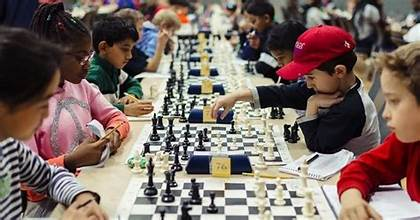

Naše práce
Jsme šachový klub v Středočeském kraji, který se specializuje na šachové turnaje a tréninky pro děti. Chceme vytvořit partu rodičů a dětí, kterým trenéři chtějí ukázat šachové prostředí a naučit se v něm orientovat. Vyučujeme především interaktivní a zábavnou formou, kterou si Vaše děti určitě zamilují! Přijďte se k nám připojit a objevit svůj talent pro šachy!
Mistrovské turnaje
Mistrovské turnaje jsou nejprestižnější událostí - patří sem Krajské přebory, Mistrovství Čech i České republiky v klasickém nebo rapid šachu, kde měří své síly ti nejlepší hráči v jednotlivých věkových kategoriích z celé republiky.

Tréninkové kempy
Tréninkové kempy formou víkendových kempů nebo soustředění jsou ideálním místem pro intenzivní trénink formou her a kvízů v kombinaci s pohybovou aktivitou v příjemném a motivujícím prostředí.

Online šachy
Online šachy jsou skvělým způsobem, jak si zlepšit své šachové dovednosti a současně se bavit s hráči z celého světa. Od ledna do března pořádáme LŠ a ML online.

Lekce pro začátečníky
Šachové lekce pro začátečníky jsou skvělým způsobem, jak se seznámit s pravidly a strategiemi tohoto oblíbeného intelektuálního sportu. Používáme učebnici "Metodika a cvičebnice" od Ing. Petra Herejka a 7 dílů cvičebnice od Martina Beila.

Akce pro rodiny
Akce pro rodiny jsou skvělým způsobem, jak trávit společný čas s blízkými, vytvářet nezapomenutelné zážitky a rozvíjet vzájemné vztahy. Mezi naše hlavní akce patří Šachy v přírodě a Šachy na lodi, festivaly sportu a sportovní dny.

Soutěže mládeže
Soutěže mládeže jsou skvělou příležitostí prokázat své schopnosti, talent a kreativitu v individuálních i týmových soutěžích a získat cenné zkušenosti a ocenění. Účastníme se hlavně Regionálních žákovských lig nejen v našem regionu, ale i v regionech v jeho přímém okolí.